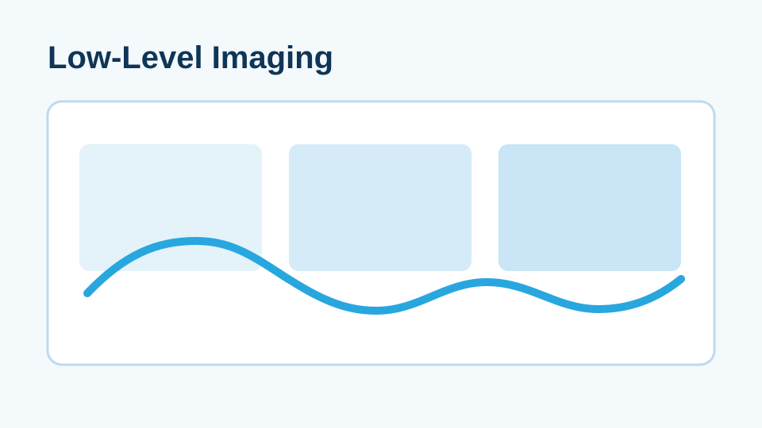
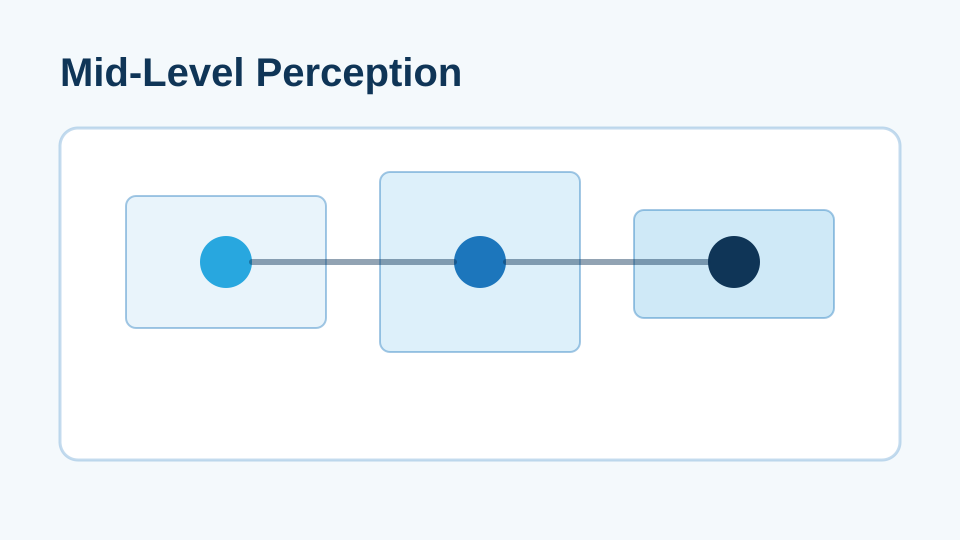
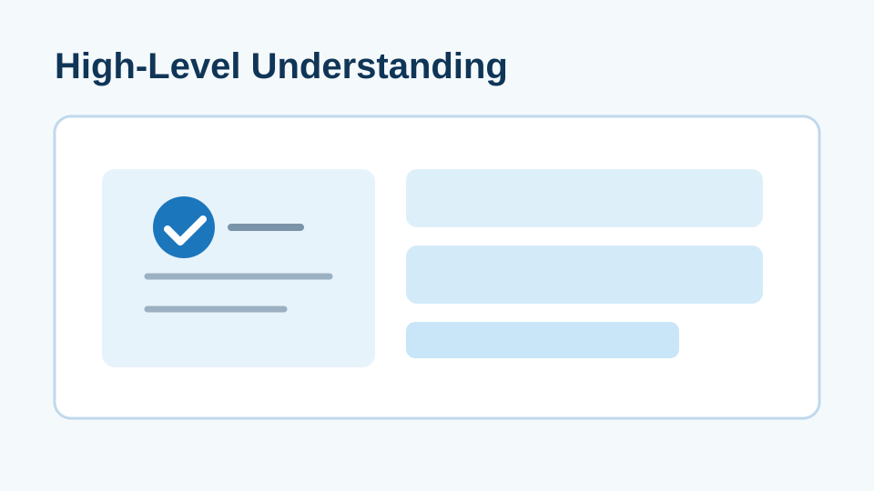
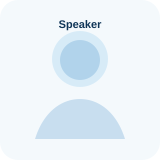
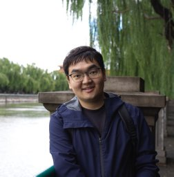
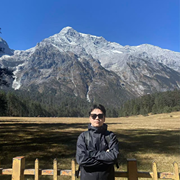
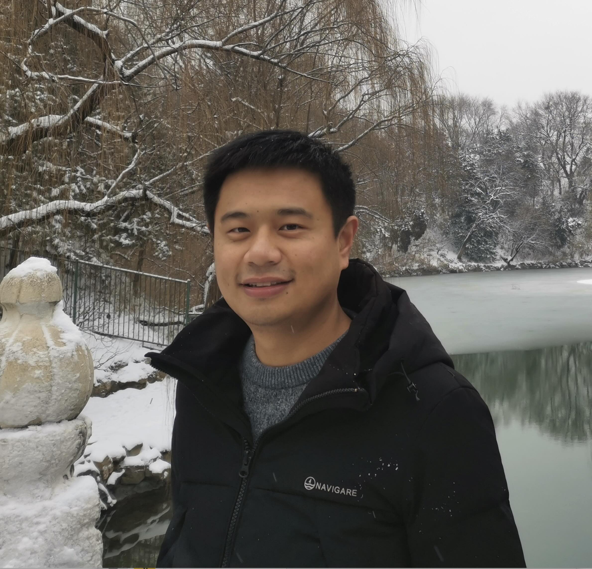

Challenge and Website Launch
TODO (around Jan 2026)
ECCV 2026 Workshop
Imaging, Perception, and Understanding with Event-Based Multimodal Vision

Tentative timeline. Exact dates will be announced after ECCV 2026 workshop schedule confirmation.
Challenge and Website Launch
TODO (around Jan 2026)
Challenge Registration Deadline
TODO (around Mar 2026)
Final Submission Deadline
TODO (around Jun 2026)
Notification and Leaderboard Freeze
TODO (around Jul 2026)
ECCV 2026 Workshop
Sept 8-13, 2026 (exact workshop day: TODO)
Our workshop focuses on research at the intersection of event-based sensing and multimodal vision, spanning the full pipeline from sensing systems and low-level imaging to perception and high-level understanding.
Each challenge now occupies one full row with a visual slot and complete link placeholders.

Event-guided image reconstruction and enhancement under extreme motion and difficult illumination, with multimodal fusion strategies.
Dataset: SEE 600K
Competition Page Dataset Link Baseline Code Evaluation Server Leaderboard

Benchmark multimodal event-based methods for detection, segmentation, and tracking in dynamic or low-light scenes.
Dataset: EBMV-Percept (placeholder)
Competition Page Dataset Link Baseline Code Evaluation Server Leaderboard

Evaluate event-based multimodal reasoning and language-grounded understanding with interpretable outputs.
Dataset: EBMV-Understand (placeholder)
Competition Page Dataset Link Baseline Code Evaluation Server Leaderboard
On-site agenda for workshop day. All slots below are placeholders and will be finalized later.
| Time | Session | Speaker / Notes |
|---|---|---|
| 08:30 - 09:00 | Registration | TODO |
| 09:00 - 09:15 | Opening and Welcome | TODO |
| 09:15 - 10:45 | Invited Talks Session I | TODO |
| 11:00 - 12:30 | Challenge Session | TODO |
| 14:00 - 15:30 | Invited Talks Session II | TODO |
| 15:45 - 16:45 | Poster and Discussion | TODO |
| 16:45 - 17:15 | Awards and Closing | TODO |
Speaker lineup and topical keywords are updated according to your latest list.

UPenn, USA
Multi-view geometry, 3D scene reconstruction, and geometric vision theory.
TU Berlin, Germany
Event-based vision, continuous-time motion estimation, and spatiotemporal modeling.
USC, USA
Neuromorphic computing, spiking neural networks, and event-driven learning systems.
Woven by Toyota, Japan
Event-based perception for autonomous driving and large-scale real-world deployment.
BIT, China
Event cameras, spiking vision models, and high-speed visual perception.
UPenn, USA
Event-based optical flow, learning-based motion estimation, and high-speed vision.

DVSense, China
Event camera sensors, imaging hardware design, and industrial vision systems.
AlpsenTek, Switzerland
Neuromorphic vision sensors, edge imaging devices, and low-power perception hardware.
OmniVision, USA
Event-based vision applications, neuromorphic sensors, and real-world deployment.
Organizer list and personal homepages.
Hanyu Zhou
National University of Singapore

Yunfan Lu
Hong Kong University of Science and Technology (Guangzhou)

Shaoyu Liu
Xidian University

Haoyue Liu
Huazhong University of Science and Technology
Peiqi Duan
Peking University
Shihan Peng
Huazhong University of Science and Technology
Yinqiang Zheng
University of Tokyo
Boxin Shi
Peking University
Kuk-Jin Yoon
KAIST
Hui Xiong
Hong Kong University of Science and Technology (Guangzhou)
Gim Hee Lee
National University of Singapore
Davide Scaramuzza
University of Zurich